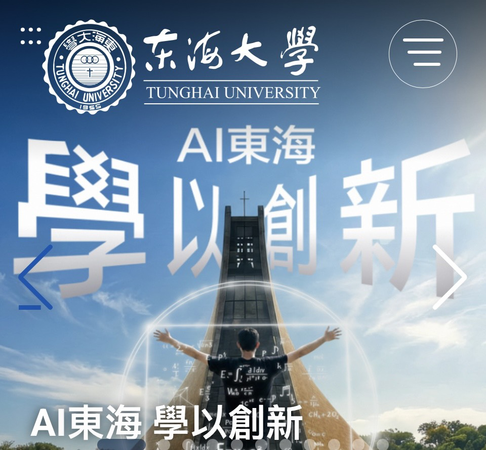
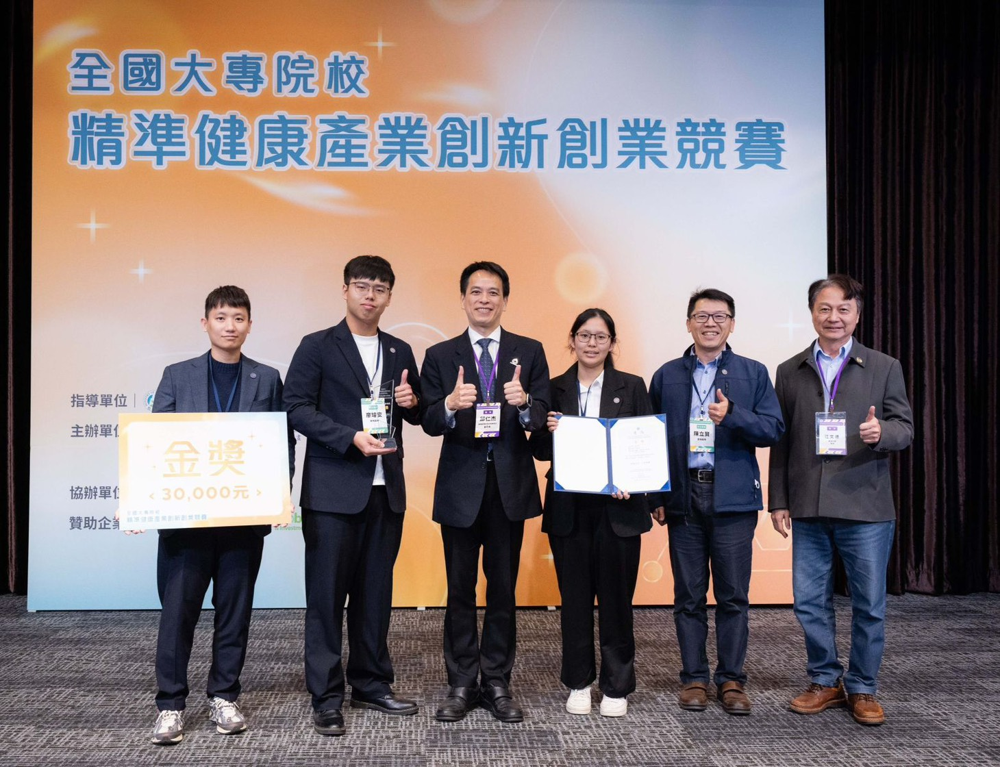

🏆 Graduate School Rankings
歷屆畢業生強勢錄取全台四大國立頂尖研究所，
直升統一、義美、鮮乳坊及生技醫藥大廠擔任研發主力。
食品科學系 × 生技醫療所 × 化工所 × 農化所…橫跨多領域全面錄取
📋 查看歷屆榜單Curriculum × AI
不再憑感覺調配食物——在這裡，你會學會用數學描述「好吃」，用 AI 預測製程，用顯微鏡看分子的一生。
導入 Python 與機器學習，解析 Herschel-Bulkley 數學模型、Cox-Merz 法則，以 RSM 實驗設計進行大規模製程最佳化。珍珠奶茶的 Q 彈、鮮奶油的打發，都是流體力學的精準運算。
整合基因定序與深度學習，分析腸道微生物組成，探討蛋白質結構與代謝組學，為次世代保健食品與精準醫療開發提供核心知識。
食安是科學的底線。結合 GC、光譜儀與非破壞性檢測，以電腦視覺 AI 輔助感官品評，建立食品品質的客觀量化指標，培育頂尖食安分析師。
結合 ERP 智慧製造、消費者行為大數據與社群分析，以 AI 精準定位市場需求。學習從研發到上市的完整食品供應鏈管理，讓好產品也懂得如何被消費者看見。
面對台灣高齡化浪潮，開發兼顧營養密度與吞嚥友善的高齡族群專屬食品。整合機能性成分（多酚、益生菌、膠原蛋白）、質地設計與臨床營養評估，搶攻台灣銀髮食品兆元商機。
Advanced Laboratory
東海食科擁有超過 10 台研究級精密儀器，讓大學生就能動手操作業界與學術界共用的頂尖設備。
從珍珠奶茶的 Q 彈到美乃滋的乳化穩定性，都源自精確的物理化學參數。學生實際操作 MCR 流變儀，解析食品的 儲存模數 G'（彈性）與 損耗模數 G''（黏滯），將「好吃的感覺」轉化為可量化的科學模型。

東海食科學生屢獲全國競賽大獎，以紮實的食品科學與跨域 AI 技術，在「全國大專院校精準健康產業創新創業競賽」斬獲金獎殊榮（獎金三萬元）。這是課堂知識與實戰能力完美整合的最佳見證。
利用高壓均質機產生的強大空穴效應（Cavitation），將機能性物質研磨至奈米級粒徑，大幅提升生物利用率。搭配螢光光譜儀追蹤蛋白質結構變性，確保高附加價值機能性食品的活性與穩定性。
Your 4-Year Journey
從基礎化學到 AI 數據建模，每一年都是能力的跳躍升級。
大一 · Year 1
打好理工地基
有機化學、生物化學、食品化學。建立扎實的分子層級理解，讓你能看懂食品的「語言」。
大二 · Year 2
進入實驗核心
食品加工學、食品微生物學、統計與實驗設計。開始實際操作儀器，學習設計嚴謹的科學實驗。
大三 · Year 3
🇯🇵 赴日移地教學！
親赴 Kewpie（丘比）、Suntory（三得利） 等日本食品龍頭企業移地教學，看見頂尖產業的技術現場。
大四 · Year 4
研究所 / 職場直通車
完成專題研究，以論文水準的成果申請台清交成研究所，或直接進入食品、生技、醫療等高薪產業。
Campus Life · 校園生活
東海大學以路思義教堂聞名全台灣，這座由世界級建築大師貝聿銘主持設計、雙曲面薄殼結構的教堂，被譽為台灣最具代表性的現代建築之一。占地遼闊的綠地、牧場、蓮花池構成台中最療癒的求學環境。
For High School Students
大一開始導入 Python 資料分析與 AI 應用，不用等到研究所才玩到 AI，讓你比同齡競爭者早三年累積實戰技能。
雷射粒徑分析儀、流變儀、螢光光譜儀、質地分析儀……這些通常要研究所才能碰到的儀器，東海食科大學生就能上手操作，履歷直接脫穎而出。
不是旅遊，是真實走進 Kewpie、Suntory 等日本食品龍頭企業的研發現場，回台灣你的視野就已超越同齡人。
全國精準健康產業創新競賽金獎、SCI 期刊論文發表紀錄，讓你的大學四年留下可量化的成就，申請研究所時底氣十足。
畢業生不只進食品業——生技、製藥、醫療器材、農業科技、AI 新創都是出口，跨域能力讓你的選擇無上限。
Career Paths
食品科學 × AI × 生技，三重技能讓你的職涯選擇遠超「食品業」。
統一、義美、鮮乳坊等龍頭企業
機能性成分、藥品賦形研究
食安檢驗、AI 輔助品質管制
台清交成研究所首選候選人
高齡機能食品、吞嚥友善設計
食品 AI 品管、大數據行銷
FAQ · 高中生最常問
不只是喜歡吃，更要懂得製造與創新。
東海大學食品科學系，等你來改變台灣食品產業的未來。